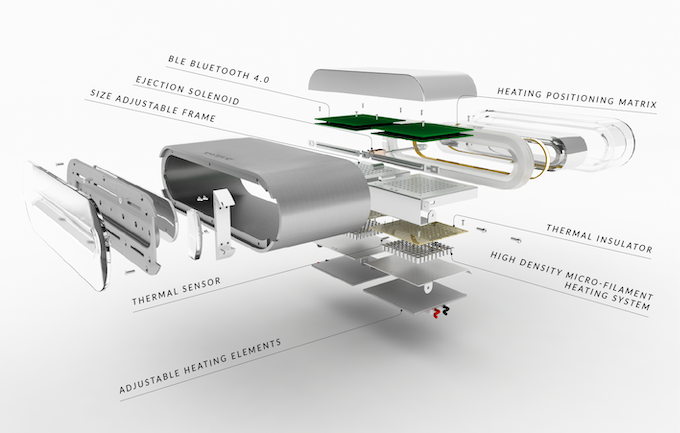

Toasteroid n'est PAS simplement un grille-pain. Un grille-pain ordinaire brunit le pain et c'est la SEULE
chose qu'un grille-pain peut faire. Toasteroid peut être votre prévisionniste météo personnel , votre
messager privé et votre Doodle Pad . Il peut faire tout ce qui précède avec de simples commandes depuis
votre smartphone et toujours faire le morceau de pain grillé le plus parfait que vous ayez jamais eu.
(Des toasts normaux peuvent toujours être faits sans l'utilisation de votre smartphone avec une simple
pression sur le bouton de démarrage sur le côté)
Il est temps de dire adieu à votre vieux grille-pain et de ramener Toasteroid à la maison !

Le système de grillage intelligent de Toasteroid est alimenté par une technologie de chauffage à
micro-filaments haute densité (brevet en instance). Ce système de chauffage innovant est responsable :
1) de la répartition uniforme de la chaleur sur la surface du pain pendant le grillage
2) de l'impression d'images sur le pain grillé.

Les grille-pain ordinaires ont une distribution de chaleur très inégale, ce qui entraîne une cuisson inégale du pain grillé. Généralement, cela affecte le croustillant général du pain grillé, mais dans les cas les plus graves, certaines parties de votre pain grillé peuvent être brûlées tandis que d'autres parties sont encore molles. Toasteroid élimine complètement ce problème grâce à sa technologie de chauffage à micro-filaments, qui répartit la chaleur de manière uniforme.